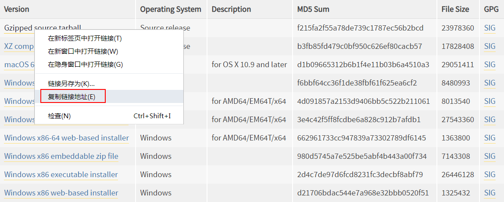

首页 > Python > Python编程环境搭建
Linux（Ubuntu）系统安装Python
Linux 系统是为编程而生的，因此绝大多数的 Linux 发行版（Ubuntu、CentOS 等）都默认自带了 Python。有的 Linux 发行版甚至还会自带两个版本的 Python，例如最新版的 Ubuntu 会自带 Python 2.x 和 Python 3.x。
打开 Linux 发行版内置的终端（Terminal），输入
另外，执行结果最后出现了 Python 命令提示符
大部分的 Linux 发行版会自带 Python 2.x，但是不一定自带 Python 3.x，要想检测当前 Linux 发行版是否安装了 Python 3.x，可以在终端（Terminal）输入
如果当前 Linux 发行版没有安装 Python 3，或者你觉得现有的 Python 3 版本不够新，那么就需要更新 Python 版本。本节我们以 Ubuntu 为例来进行演示。
等待以上两条命令执行完成，再次在终端输入
打开链接，可以看到各个版本的 Python：

图 1 Python 下载页面截图
点击上图中的版本号或者“Download”按钮进入对应版本的下载页面，滚动到最后即可看到各个平台的 Python 安装包。
在“Gzipped source tarball”处单击鼠标右键，从弹出菜单中选择“复制链接地址”，即可得到
然后执行以下命令：
经过以上几个命令，我们就安装好了 Python，这时就可以进入终端，输入 Python 指令，验证是否已安装成功。
上述命令执行完成以后，再次在终端输入
打开 Linux 发行版内置的终端（Terminal），输入
python命令就可以检测是否安装了 Python，以及安装了哪个版本，如下所示：
[c.biancheng.net@localhost ~]$ python Python 2.7.5 (default, Jun 17 2014, 18:11:42) [GCC 4.8.2 20140120 (Red Hat 4.8.2-16)] on linux2 Type "help", "copyright", "credits" or "license" for more information. >>>可以看到，
python命令能够正常运行，并输出了 Python 的版本信息，这表明当前的 Linux 发行版已经自带了 Python 2.7.5。另外，执行结果最后出现了 Python 命令提示符
>>>，这意味着我们进入了 Python 交互式编程环境，可以在这里直接输入代码并查看运行结果，如下所示：
[c.biancheng.net@localhost ~]$ python
Python 2.7.5 (default, Jun 17 2014, 18:11:42)
[GCC 4.8.2 20140120 (Red Hat 4.8.2-16)] on linux2
Type "help", "copyright", "credits" or "license" for more information.
>>> print("C语言中文网的网址是：http://c.biancheng.net")
C语言中文网的网址是：http://c.biancheng.net
>>> a=100
>>> b=4
>>> a*b
400
>>> exit()
[c.biancheng.net@localhost ~]$
exit() 用来退出 Python 编程环境，回到 Linux 命令行。大部分的 Linux 发行版会自带 Python 2.x，但是不一定自带 Python 3.x，要想检测当前 Linux 发行版是否安装了 Python 3.x，可以在终端（Terminal）输入
python3命令，如下所示：[c.biancheng.net@localhost ~]$ Python3 Python 3.6.4 (default , Nov 18 2018 , 13:02:36) [GCC 4.8.2 20140120 (Red Hat 4.8.2-16)] on linux2 Type "help","copyright","credits" or "license" for more information. >>>如果
python3命令运行成功，并出现 Python 提示符>>>，则表明当前 Linux 发行版已经安装了 Python 3 开发环境，只需执行python3命令就可以启动 Python 3 开发环境。如果当前 Linux 发行版没有安装 Python 3，或者你觉得现有的 Python 3 版本不够新，那么就需要更新 Python 版本。本节我们以 Ubuntu 为例来进行演示。
更新 Python 版本
在 Ubuntu 终端执行以下两条命令即可更新 Python 版本：
$sudo apt-get update
$sudo apt-get install python3.8
- 第一条命令用来指定更新 /etc/apt/sources.list 和 /etc/apt/sources.list.d 所列出的源地址，这样能够保证获得最新的安装包。
- 第二条命令用来指定安装 Python 3.8，这是目前最新的 Python 版本。
等待以上两条命令执行完成，再次在终端输入
python3命令，就可以看到 Python 交互式编程环境已经更新到 Python 3.8。
重新安装 Python
以上更新方法仅在 Ubuntu 已经安装 Python 的情况下才有效，如果你的 Ubuntu 中没有 Python 环境，或者你想重新安装，那么就得到官网下载源代码，然后自己编译。1) 下载源代码
Python 官方下载地址：https://www.python.org/downloads/打开链接，可以看到各个版本的 Python：
图 1 Python 下载页面截图
点击上图中的版本号或者“Download”按钮进入对应版本的下载页面，滚动到最后即可看到各个平台的 Python 安装包。

图 2 找到源码包地址
图 2 找到源码包地址
在“Gzipped source tarball”处单击鼠标右键，从弹出菜单中选择“复制链接地址”，即可得到
.tgz格式的源码压缩包地址。然后执行以下命令：
$ wget https://www.python.org/ftp/python/3.8.1/Python-3.8.1.tgz
解压源码包：$ tar -zxvf Python-3.8.1.tgz
2) 编译
使用 make 工具进行编译：
$ ./configure --prefix=/usr/local
$ make&&sudo make install
--prefix=/usr/local用于指定安装目录（建议指定）。如果不指定，就会使用默认的安装目录。经过以上几个命令，我们就安装好了 Python，这时就可以进入终端，输入 Python 指令，验证是否已安装成功。
小技巧
python命令默认调用的是 Python 2.x 开发环境，如果你习惯使用 Python 3.x，感觉每次输入python3命令有点麻烦，那么你可以修改配置，让python命令转而调用 Python 3.x 开发环境。具体命令如下：
$sudo unlink /usr/bin/python
$sudo ln -s /usr/bin/python3.8 /usr/bin/python
上述命令执行完成以后，再次在终端输入
python命令，进入的就是 Python 3.8 的交互式开发环境了。关注公众号「站长严长生」，在手机上阅读所有教程，随时随地都能学习。内含一款搜索神器，免费下载全网书籍和视频。

微信扫码关注公众号